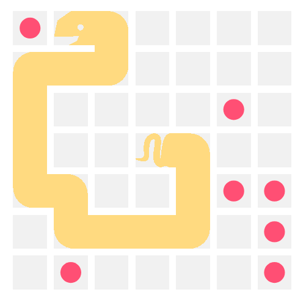
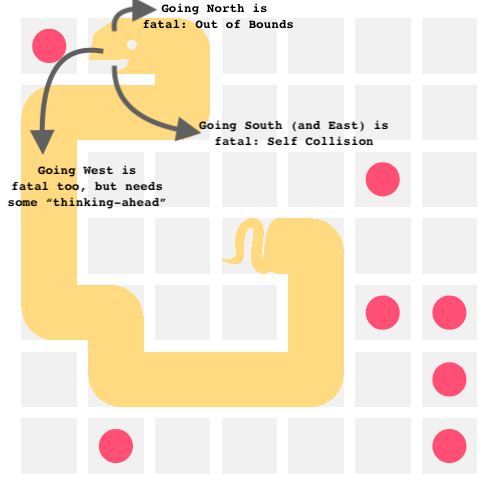
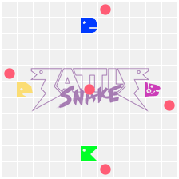

Battlesnake: 01 Avoiding Silly Deaths

Figure 1: Avoiding Silly Deaths
I am facinated by programming games, where instead of controlling a character directly, we write a program that controls the character. Battlesnake is one such game where our program controls a snake with an aim to outlive the opponents or to survive for a certain amount of moves.
The precise rules are well defined in the docs, but here's the TL;DR: don't hit yourselves or the wall, eating food replenishes your health to 100 and grows you by one cell, going below 0 starves you to death, don't hit other snakes in the body, if two snakes have head-on collision, the larger one survives.

Figure 2: Avoiding Silly Deaths
Out of Bounds Check
Checking whether the snake is going out of bounds is probably the easiest check
to implement. We get the board dimension from the request data:
data["board"]["height"] and data["board"]["width"]
next_cell = calculate_next_cell(head, direction)
if (next_cell['x'] >= 0 and next_cell['x'] < board_dim['width'] and
next_cell['y'] >= 0 and next_cell['y'] < board_dim['height']):
# safe!
Self Collision
The next most straight forward check to implement is to detect Self Collision.
We get the position of each cell of the snake in the request data:
data["you"]["body"]. Using this, the next_cell
cannot be any of the body cells:
next_cell = calculate_next_cell(head, direction)
body_set = set(data["you"]["body"])
if next_cell not in body_set:
# safe!
Generic Colission detection
We get the position of the cells of the other snakes in the request data. We can
extend the previous function to detect collision with other snakes too by simply
adding the cell positions to the body_set. We may want to have collision with
the other snakes depending on whether it's a headon collision and the lenghts
of both of the snakes, but this is a little more involved, so we'll deal with
it later.
With these simple logic implementations, the snake was able to debut on the website and complete a couple of challenges.

Figure 3: Survive 500 moves
Next step: feeding the snake!